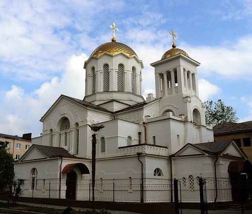

21 09 2011 (2061 день 2 часа назад)
Во всех действующих приходах Абхазии прошли божественные молебны в связи с Днем Рождества Богородицы и девы Марии.
Сегодня, 21 сентября, в день Рождества Богородицы и девы Марии завершается пребывание в Абхазии копии чудотворной мироточивой Иконы Божьей Матери "Умиление" Серафимо-Дивеевской из Брянской области, села Локоть.
В этот день православная церковь отмечает Рождество Богородицы — один из основных христианских праздников. Во всех действующих приходах Абхазии прошли божественные молебны.
Икона Божьей Матери "Умиление" находилась в Абхазии с 5 сентября. Икону возили по всем районам республики в сопровождении абхазских священнослужителей.
Сама икона Божьей Матери "Умиление" Серафимо-Дивеевская принадлежала преподобному Серафиму Саровскому, была его келейной иконой.

Сегодня, 21 сентября, в день Рождества Богородицы и девы Марии завершается пребывание в Абхазии копии чудотворной мироточивой Иконы Божьей Матери "Умиление" Серафимо-Дивеевской из Брянской области, села Локоть.
В этот день православная церковь отмечает Рождество Богородицы — один из основных христианских праздников. Во всех действующих приходах Абхазии прошли божественные молебны.
Икона Божьей Матери "Умиление" находилась в Абхазии с 5 сентября. Икону возили по всем районам республики в сопровождении абхазских священнослужителей.
Сама икона Божьей Матери "Умиление" Серафимо-Дивеевская принадлежала преподобному Серафиму Саровскому, была его келейной иконой.